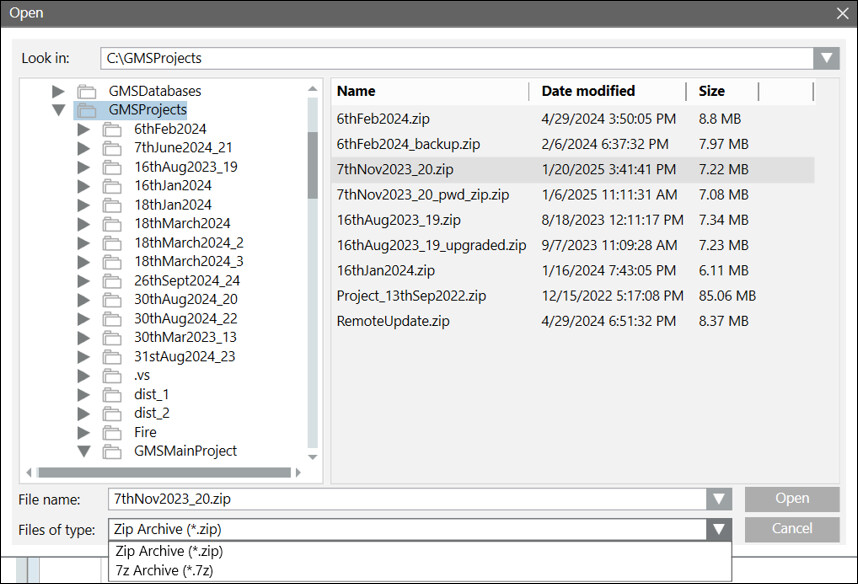
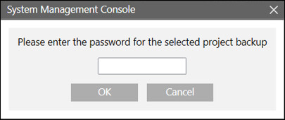
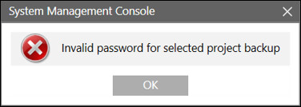
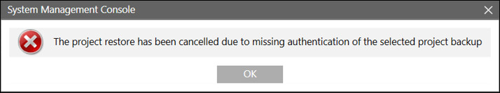
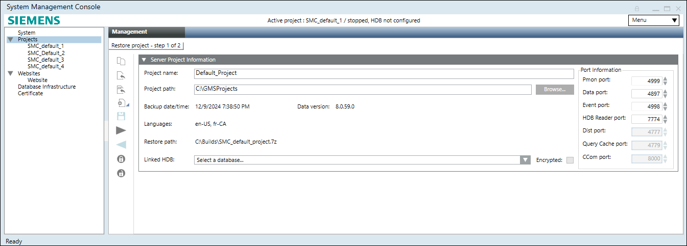
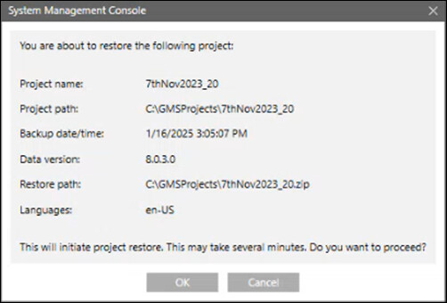
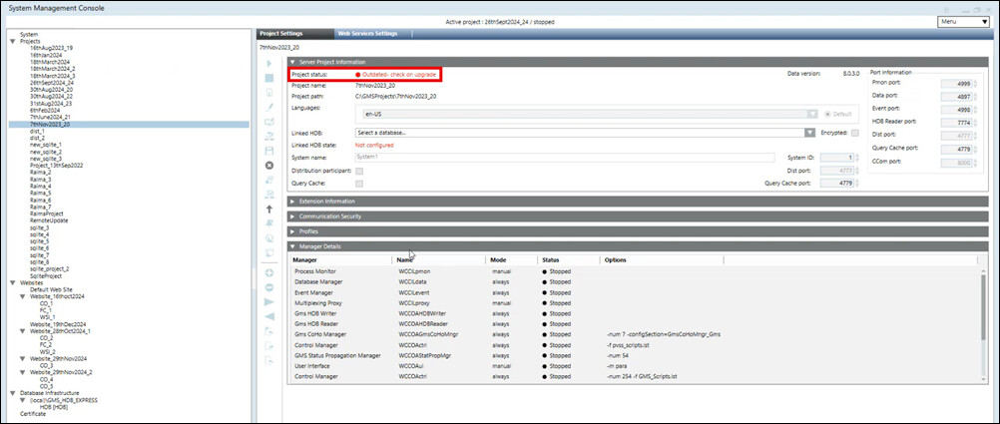

Restore a Compressed Project/Template in SMC
Using SMC, you can restore a compressed project/project template only on a Server. During the restore process, the SMC internally checks if the backup selected for restore is compatible with the current Data version or if it needs an upgrade.
- At least a project backup is available in .zip or .7z format.
- In the SMC tree, select Projects.
- Click Restore Compressed Project to restore a compressed project backup.
- The Open dialog box displays.
- Set the Files of type to either Zip Archive (*.zip) or 7z Archive (*.7z) to filter the project backups.
- Select the project backup and click Open.

- If the project backup is password protected, a password dialog box displays.

- Enter the password and click OK.
NOTE: If the entered password is wrong, an invalid password dialog box displays. 
- Click OK to enter the password again.
NOTE: If the password is entered incorrectly on the second attempt, the project restoration process is cancelled. 
- Click OK to close the dialog box.
- If the password authentication is successful, the Server Project Information expander displays with the fields filled in (including the port numbers) according to the selected backup.

- (Optional) Edit the following fields as required:
- Project name: Provide a unique name for the project. No two projects with the same name can exist in the SMC. If there is already a project in SMC with the same name as the project you are about to restore, you must either rename the project you are about to restore to a different name or stop and then delete the existing project that has the same name, and then perform the restore.
- Project path: Click Browse to change the default project path.
- Port information: Displays the default port numbers for ports Pmon, Data, Event, HDB Reader and so on.
- Linked HDB: By default, the HDB is specified in the project config file and if that HDB is present on the Server where you are about to restore the project, the HDB is displayed in the Server Project Information. You can modify the HDB and NDB of the restored project.
- Click Save Project .
- A confirmation dialog box displays with details of the selected backup folder, including the project name, project path, date/time when the backup was taken, the Desigo CC Data version which was used to run the given backup, restore path, and language(s) of the backed-up project.

- Click OK to restore the selected project/project template.
- On confirmation, the project/project template is restored successfully, the project node displays under the SMC tree, the project folder is created at the specified project path, the Start, Stop, Activate, Edit, and Delete Project icons are available and the Upgrade icon is enabled only when the restored project version is older than the installed one.
